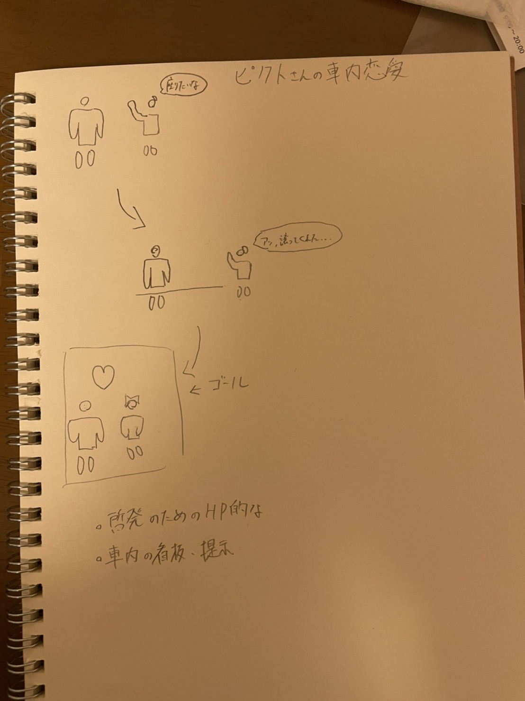
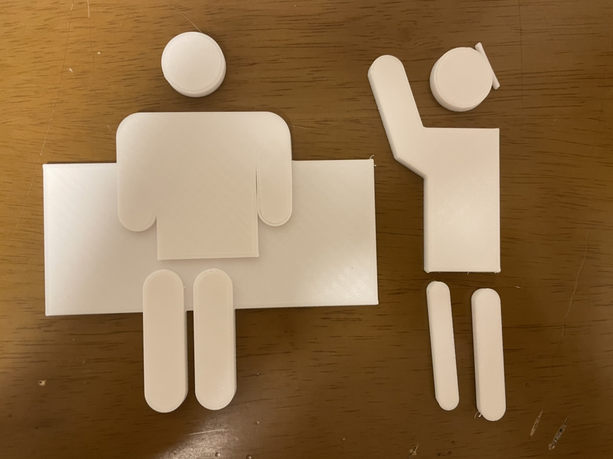
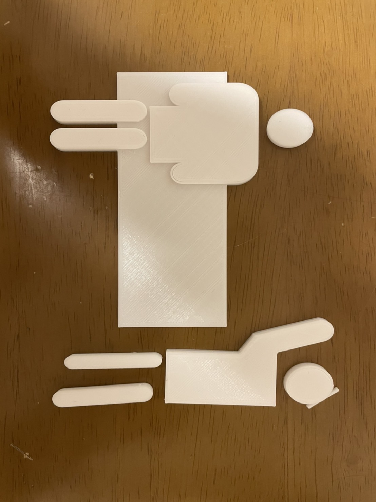
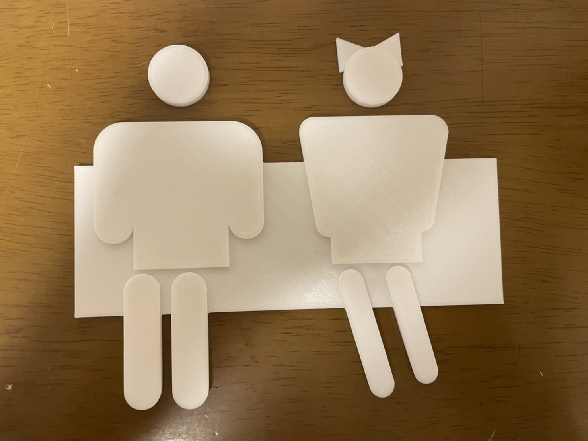

Design for others-2
スケッチ
 ・看板とか標識は一つの場面にフォーカスして警告なり行っているので、看板の中にストーリー性を持たせて目を引くようにする。
完成した作品
 二人席を占領している図  立っている乗客を察して端による図  急展開
説明
・実際に製作できるもののなかではやはり看板しかないと思った。
MDF板に貼り付けて天井から釣るような形にする予定だったけど、レーザーカットの設計が間に合わず。
使用機材
3Dプリンター
ほかの班員の作品